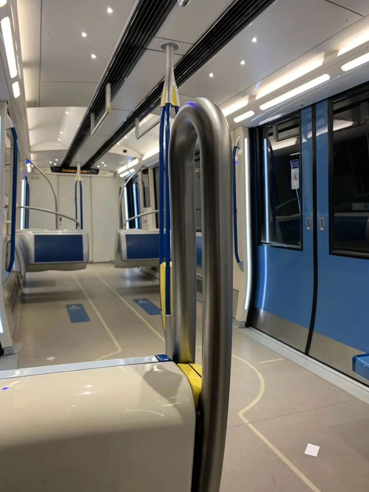

德国“隔离”日记 || 门外闲汉满街阳光明媚，门内货架抢购一空
原文链接 备份链接 今天是3月17日，月相为39%的下弦月。 It is March 17 with a 39 percent of Last Quarter. 距离新月还有 7 天。 There are 7 days until New …
曾经被人羡慕着可以搭乘撤侨飞机回到安全地的加拿大人，怎么也不会想到，有一天，我们也要经历停课、所有公共场所强制关闭、抢购、缺货的生活。
文 | 艾琳
一个月前，谁都没有想到，我们这也会经历这样的乱世。
3月12日，我所在的蒙特利尔还在观望着疫情会如何发展。关于是否停课，还只处于某些个别出现疑似病例的学校的部分年级停课。魁北克省的学校春假比安大略省早一周开始，公立学校从3月2日起放一周，私立学校放两周。春假基本上是憋了一个冬天的加拿大人疯狂出游的时间。于是，3月12日当天，我和一些朋友开始担心学校一旦复课，那些从四面八方赶回来上班和上课的人会带来什么不可预料的情况。
当天晚上关于总理夫人病毒测试是否成阳性的新闻基本处于猜疑阶段。下班回家，我妈第一句话就说，特鲁多的老婆也被确诊了。我说，假新闻。现在所有消息都必须找到主流媒体的原文，否则不能相信。第二天一早，总理夫人被确诊的消息就出现了。

加拿大总理特鲁多及夫人苏菲
与此同时，3月12日下午开始朋友圈就出现了超市抢购厕纸的消息。有朋友得意地在群里说，下午2点在郊外的Costco还是满满的货，听他话的朋友都轻而易举地买到了所有物品。等到晚上6点再去同一个Costco，货架全部清空。
3月13日，我们在蒙特利尔明显感到疫情的情况已急转直下。魁北克省长François Legault在直播新闻发布会上宣布了强硬的抗疫政策，包括魁省所有日托、学校、预科（魁省的教育体制与法国相同，在升入大学前会有2年的预科教育）和大学将关闭至少两周。所有图书馆、社区体育场馆一律关闭，直至另行通知为止。实际上，大多数学校在3月13日当天已经关闭。政府将为医务卫生工作人员和其他基本服务工作者的子女设立特殊日托，好让这些工作人员能够继续正常工作。

3月13日周五早上的蒙特利尔地铁，乘客十分稀少 图 | 受访者****
除此以外，卫生当局还限制了蒙特利尔部分医院和疗养院的访问。不仅如此，对于本省所有70岁以上的老人，省长也提出了居家自我隔离的要求，避免感染风险。省长表示，魁北克必须对中国此前抗疫过程中收集到的数据进行分析，学习中国的经验。
随后，蒙特利尔交通局(STM)也宣布，禁止其所有雇员到魁北克省以外的地区旅行，无论是个人旅行还是工作旅行，否则他们将不得不被隔离。STM还表示，将会每日清洁地铁和公交车最常使用的表面，包括扶手、自动扶梯、升降机及售票机等。
抢购+囤货，却没人戴口罩
在抢购囤货的消息传了两天后，上周六我终于有空去了趟超市。Costco从几周前就开始为进门的每位客人提供消毒纸巾擦拭购物车。
3月14日进超市，除了擦车的消毒纸外，还有专门擦手的消毒纸。取消了所有试吃服务的Costco在生鲜冰柜上摆放了消毒纸巾。当天的Costco专门辟出一个角落发放纸质产品。卫生纸、厨房纸、餐巾纸已变成限量发放。在结账区，工作人员还会检查每辆推车，是否超额购买。除了纸质用品限量供应外，漂白水、消毒纸巾和液体肥皂全部断货。
尽管朋友圈陆续出现Costco“报复性”补货的图片，实际上，3月15日所有超市的纸质商品都处于限购状态，消毒产品依然缺货。从大到Costco这样的仓储式超市，小到街区药房，所有与消毒有关的产品一律缺货，并且限购。
然而，最令人费解的是，几百人拥挤在一处抢购厕纸，居然没有一个人戴口罩。

蒙特利尔Costco里民众抢购厕纸，却无人戴口罩 图 | 受访者
紧张囤货的蒙特利尔，去晚一点就没有厕纸可买的蒙特利尔，街上戴口罩的少之又少。路上偶然见到戴口罩的人绝大多数是华人面孔。
尽管本地人不戴口罩，但所有药房早在1个多月前口罩基本都缺货。过去，本地代购们将口罩运回国。现在，各大微信群里在登记人数从国内运口罩到加拿大。
市中心空空荡荡
随着疫情紧张局面的加剧，蒙特利尔最著名的餐厅Joe Beef表示，在结束了3月14日的营业后，将会无限期关闭，直至可以接续营业。3月15日上午，蒙特利尔市中心唐人街空荡荡，晚间有消息传来，多数位于唐人街的餐厅将于周一开始暂停营业。然后，与这些不缺客人的名店相比，各个在街巷间生存的小餐厅日子就变得非常困难了。

蒙特利尔唐人街 图 | 受访者
我在蒙特利尔经营着一家有着近20年历史的寿司店。这家餐厅位于蒙特利尔最富裕的一个社区。客人以社区居民和周围图书馆、学校和市政府员工为主。原本周四至周末是生意最忙碌的时间段，但上周四开始，随着学校停课和政府一系列强硬措施的出台，客人基本处于消失状态。
我家旁边有一家挺出名的葡萄牙烤鸡店，周末就餐需要预约，否则一位难求。3月13日下午，餐厅经理一脸愁容告诉我，他们当天所有的定位都被取消，客人的理由就是怕病毒传染。目前，他们正在商量是否有必要暂停营业，以降低损失。3月15日晚，偶遇烤鸡店老板，他说，虽然不关店，但只打算保留一个员工，自己则负责送外卖。
3月15日，魁省政府宣布，所有酒吧、夜总会、自助餐等场所强制关闭。魁北克公共卫生局局长Horacio Arruda强硬表示，关闭酒吧等各类公共场所是命令，而不是建议。3月15日下午，已有朋友告知魁北克彩票局前往他所经营的酒吧强制关闭了彩票机。此外，对于不用关门的餐馆，政府建议，餐馆只开放一半座位，并要求就餐椅子摆放要相距至少1米。
“我们就像处于战时状态”
截至3月16日，加拿大确诊病例已经达到436例，其中魁北克省50例。
位于蒙特利尔市中心的犹太医院（Jewish General，即魁省4家新冠定点治疗医院之一）的医务人员表示，他们正在为收治“一大波”可能出现的新冠患者做准备。据悉，犹太医院拥有87张病床可容纳新冠病人。蒙特利尔卫生局副局长Francine Dupuis在新闻发布会上表示：“我们现在就像处于战时状态中。”（It’s like we are in a situation of war.）
目前，蒙特利尔仅有一家COVID-19筛查诊所，不过Dupuis表示，蒙特利尔计划再开设两家筛查诊所以减轻医院的压力。但她也承认，如果出现疫情爆发，医院也将束手无策。
3月16日，加拿大总理特鲁多向全国发表讲话时表示，加拿大将禁止绝大多数外国公民入境。
现在，我只能希望疫情不会在这里大暴发了……


· 欧洲27国无一幸免，张文宏：后续发展不容乐观，跨年度疫情风险越来越大
· 我在海外 | 看到英国政府发布“群体免疫”政策，我开始慌了
· 军事 | 受疫情影响，北约“寒冷反应”演习取消，规模更大的“欧洲捍卫者20”呢？
新民周刊所有平台稿件， 未经正式授权
一律不得转载、出版、改编或进行
与新民周刊版权相关的其他行为，违者必究


原文链接 备份链接 今天是3月17日，月相为39%的下弦月。 It is March 17 with a 39 percent of Last Quarter. 距离新月还有 7 天。 There are 7 days until New …
原文链接 备份链接 我不太确定学校停课的时间会不会继续延长。因为我们在群里对此次意大利疫情的预测是不太乐观的。 记 者 | 应 琛 受访者 | 王艺林 上午在宿舍自习完之后，我习惯性地打开新闻网站了解当天意大利新冠肺炎疫情的最新情况。我 …
原文链接 备份链接 中国现有确诊病例已降至1万以下。国内已采取最严密的入境防疫检测措施。美国继续在快车道上狂奔，但基本防疫措施已经得到重视和加强 文丨《财经》数据研究员 徐进 图丨《财经》视觉中心 编辑丨郝洲 一、境外输入病例北京居首， …
原文链接 备份链接 编者按： 今天有两个新消息：好消息是，特朗普没感染，坏消息是，前一条消息并没有让美国人松一口气。相反，这两天美国的疫情紧张程度骤增，而这种紧张又通过各种社交媒体实时地传播到世界各地。 美国内部对于特朗普政府的疫情反应和 …
原文链接 备份链接 今天是3月15日，月相为60%的下弦月。 It is March 15 with a 60 percent of Last Quarter. 距离新月还有 9 天。 There are 9 days until New …